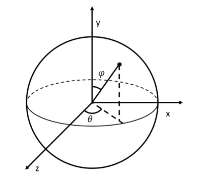
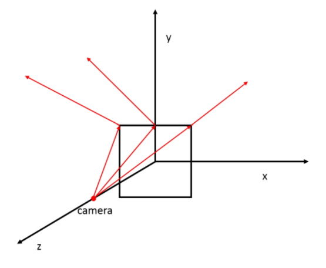
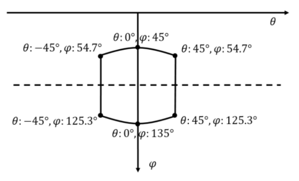
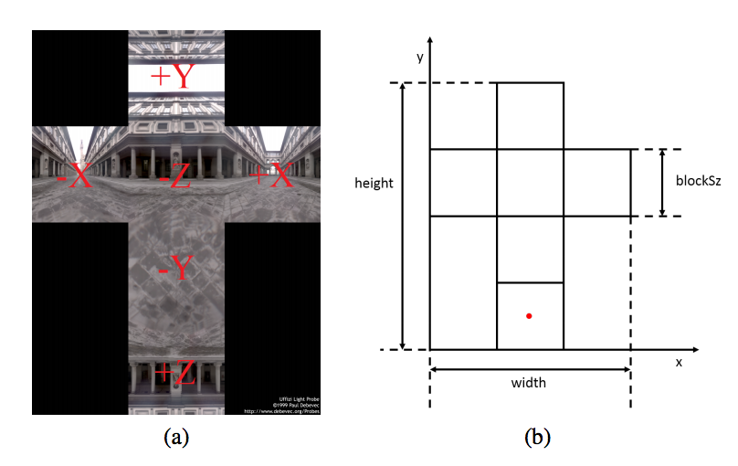

Due: Friday May 5th 2017 (11:59pm)
1.Introduction
Ray 1 introduced you to the basic principles behind this relatively simple, and at the same time
very powerful, algorithm for rendering images. In this assignment, we will enhance the previous
algorithm to trace multiple light bounces, which will allow us to render essential physical effects
that were impossible to produce before (e.g., reflection and refraction of light).
You will quickly realize that tracing multiple ray bounces fits quite nicely in the provided framework
and does not require much of an effort to implement, but it also reveals the major problem behind this
approach: its performance. Therefore, one of your goals in this assignment will be to implement
a hierarchical data structure that will accelerate the bottleneck step in ray tracing, the ray-object
intersection.
Requirement Overview
In Ray 1, you implemented the basic ray tracing; we will provide a package that contains what you
implemented from that assignment, plus some updates to the framework. You will extend this ray
tracer as specified below. This new ray tracer should support all the features of the one in Ray 1 and
the following features below:
- Monte Carlo illumination. In Ray 1, there were only point lights, and the shaders directly computed
surface colors using formulas that only work for point lights. In this assignment, the framework uses a
different approach: there are many types of light sources, represented by subclasses of Light,
each providing an interface
for selecting a direction towards the source, with a provision for random sampling of non-point lights. Also,
the shaders for non-mirrorlike materials (Lambertian, Phong, Cook-Torrance) share a single shading method,
implemented in the abstract class BRDFShader. You will implement this shading method, and also
implement the RectangleLight light source class, which will enable you to render
soft shadows from area light sources.
- Anti-aliasing. Implement anti-aliasing using regular supersampling (Shirley 8.3, 9.4, 13.4).
- An acceleration structure. Your program should be capable of rendering large models (up
to several hundred thousand triangles) with basic settings in a few minutes. Achieving this
requires a spatial data structure that makes the time to trace a ray sublinear in the number
of objects. In this assignment, we provide a framework for axis-aligned bounding volume
hierarchy (BVH) which is a simple and effective way of speeding up ray traversal. (Shirley
12.3). Before you have implemented BVH, you can add
<AccelStruct type="NaiveAccelStruct"/>
in the scene file in order to test other parts of your implementation.
- Advanced shader: glass. A Glass material that simulates an interface between air and
a dielectric material. The glass shader obtains its color from light intensity along two new
rays, the reflected and refracted rays, and adds their corresponding contributions (Shirley 13.1).
- Environment mapping. Our framework can load a pfm (a HDR image format) file as an environment
map. You are asked to implement a method that looks up the color of the cubemap
in a given direction.
- We have provided a list of extensions that can be implemented for extra credit.
2.Written part
Do this written part alone.
1. Short-answer Questions:
- Jimmy just purchased his new spring outfit, from baseball cap to sandals. Now he wants to take a peek at his new look in the mirror. Jimmy is 6 feet tall. What is the minimum dimension (assuming square mirror) of the mirror that Jimmy has to buy for him to see his entire body, if he is standing 10 feet away from the mirror? How about if he is standing 30 feet away from the mirror?
- (2-D) A laser beam is shone at a flat glass block of infinite area at an incident angle of 45 degrees (measured between the incident ray and the normal of the surface). The laser is positioned at (0, 0), and the surfaces of the glass block are positioned between x = 1 and x = 1+T. What is the length of the area that can be swept by the laser beam if T is varied from 0 to 5. (See Figure 1.)
2. Suppose we are rendering an image for the IKEA catalog, showing a cylindrical coffee mug available in stainless-steel material. The mug will be illuminated by an ambient light, as well as a window. The camera is positioned at (0, 0, 20), viewing in direction (0, 0, -1) with up direction (0, 1, 0). The mug is centered at the origin of the coordinate system, with height 10 and radius 5. The mug's axis is aligned with the y-axis. And the whole mug can be captured in the image.
For a nice product photo we'd like to see the window reflected on the side of the mug. Where can the window be placed (assume for now that the window is a point) in the environment map where it will be reflected on the side of the cylindrical mug? What if the camera is positioned at (0, 0, 100)? Your answer should be a sketch in \((\phi, \theta)\) space showing the region that is reflected in the mug. Compute the \((\phi, \theta)\) coordinates of the corners of the region and of the highest and lowest \(\phi\) and \(\theta\). As a simpler example of such problem, consider a camera positioned at (0, 0, 1), and looking at a mirror-like square in the x-y plane. The vertices of the square are at (1, 1, 0), (-1, 1, 0), (-1, -1, 0) and (1, -1, 0).
In right panel of figure 2 the red arrows are the critical rays you need to consider to find the critical points on the border of the reflected region. The reflected region for this simple case is shown in Figure 3.


Figure 2: left panel-Spherical Coordinate system; right panel-Simple Reflection Example

Figure 3: range of \(\phi\) and \(\theta\)
3. Consider a scene where a square light source is standing vertically on a planar Lambertian surface. The light is in the \(z=0\) plane, covering the area \(0 \le y \le 1\) and \(-\frac{1}{2} \le x \le \frac{1}{2}\), and the surface is in the \(y=0\) plane. In lecture, we talked about two ways to formulate the problem of computing the light reflected from ths surface. One is an integral over points on the the light; let's see how this approach performs using Monte Carlo integration for shading points on the \(z\) axis at 0.1, 1, and 10 units away from the light. The diffuse coefficient of the Lambertian surface is \(k_d=0.2\). The square light source radiance equals to 1 and is uniform across the source area.
(a.) Write out the integrand that needs to be integrated over the light's area, as a function of \(x\) and \(y\). Use your favorite plotting software to visualize this function, for instance as a height-field plot or a color-mapped square image, for each of the three shading points.
(b.) Compute the correct answer to this 2D integration problem for each of the three shading points using Wolfram Alpha or a similar tool.
(c.) Write down a Monte Carlo estimator for this integral using uniform sampling over the light source area (it is quite simple to do so in this case) and compute the mean and standard deviation of 1000 samples of this estimator. In which case does it give the lowest and highest relative error (measured as standard deviation divided by the true answer), and, briefly, why?
3.Programming part
3.1 Implementation
A new commit has been pushed to the class Github page in the master branch. We recommend
switching to your master branch, pulling this commit, and creating a new branch (e.g. A7 solution)
and committing your work there. This new commit contains all the framework changes and
additions necessary for this project.
We have marked all the functions or parts of the functions you need to complete with TODO#A7 in
the source code. To see all these TODOs in Eclipse, select Search menu, then File Search and type
TODO#A7.
3.1.1 Illumination
The framework for this assignment uses a more sophisticated and flexible approach to surface illumination than
we used in Ray 1. The first difference has to do with shaders. In Ray 1, the shaders were completely
independent, which was simple but led to duplicated code for looping over lights in the Lambertian and Phong
shaders. In Ray 2, the shaders that compute illumination from light sources all inherit from the class
BRDFShader, which contains the shade method, and the differences between them are captured
by overriding evalBRDF. (The glass and glazed shaders do not compute illumination from light sources,
so they do not inherit from BRDFShader and they have their own shade methods.)
The second difference has to do with light sources. Ray 1 supported only point lights, but Ray 2 supports
directional and area lights as well. This means the shading code can no longer assume lights have a single position
in the scene, and there needs to be a provision for integrating over area lights. This is solved by introducing
the Light class, which provides an abstract interface to lights in terms of selecting directions. The
function Light.sample has to be supported by all light sources; given a shading point, it selects a
direction towards the light source. This can be deterministic (as in point or directional lights) or random
(in area lights). Sampling results in four things:
- The direction towards the light from the shading point. This is needed to set up a shadow ray.
- The distance to the light source (infinite for a directional light). This is needed to determine where to end the shadow ray.
- The attenuation due to geometric considerations (inverse square falloff, for point lights).
- The probability with which the point was selected.
The word “probability” is slightly vague here. For a light that selects between a finite number of directions it is the probability of choosing the direction; when only one direction can be chosen (as in point or directional lights), the probability is 1. For a light that chooses points on a surface (as in area lights), it is a probability density measured as probability per area. For a light that chooses directions (you will only have these if you do extra credit), it is a probability density measured as probability per unit solid angle.
For instance, you can see that the PointLight class sets the direction and distance by subtracting the light position from the shading point, sets the attenuation to inverse distance squared, and sets the probability to 1 (since it always will choose the same direction, given the same shading point). When used by the shade method this will result in the same output color as would be computed by Ray 1.
To implement illumination in BRDFShader, you will write code similar to the code for the shaders in Ray 1, in that it loops over the lights and adds a contribution for each. The differences are that it uses Light.sample to interact with the lights; it calls evalBRDF to get the BRDF value, rather than directly computing the value for a particular model; and it has to remember to divide by the light source sampling probability. Once you have done this, shading from point and directional lights should work correctly.
To implement RectangleLight, you will have to implement the sample method. It chooses a point randomly on the area of the light source, then fills in the direction and distance in the same way as a point light. The attenuation is slightly different because it needs to include the cosine factor at the light end of the shadow ray; and you need to compute the probability density per unit area with which the point was chosen (this is pretty simple since you'll choose points with a uniform density). Once you have implemented this method, you should see soft shadows from rectangle lights (you will need several samples per pixel to get not-too-noisy results).
3.1.2 Antialiasing
To support anti-aliasing, modify the renderBlock method of RayTracer to make the ray tracer
shoot multiple rays per image pixel. renderBlock method contains the samples variable which
is the number of samples to take per one dimension of the image plane. (That is, the tracer should
shoot samples\(^2\) rays per pixel.) Note that we have abused the variable samples: in the xml file
we use samples to refer to \(N^2\), while here it refers to \(N\).
3.1.3 Acceleration Structure
You will implement an acceleration structure called axis-aligned bounding volume hierarchy(BVH).
It is a tree whose leaves are surfaces in the scene. Each of its internal nodes contains an axis-aligned
bounding box(AABB) that contains all the surfaces in the subtree rooted at that node. An axisaligned
bounding box is defined by two 3D points \((x_{min}; y_{min}; z_{min})\) and (x_{max}; y_{max}; z_{max}).
The box itself is the Caresian product of three intervals in each dimension,
\[
[x_{min}; x_{max}]\times[y_{min}; y_{max}]\times[z_{min}; z_{max}].
\]
Before constructing the acceleration structure, you need to complete the computeBoundingBox
method of all the subclasses of Surface except Mesh. This method should modify three fields:
minBound, maxBound, and averagePosition. After calling this method, the AABB defined
by minBound and maxBound in world space should contain the represented surface entirely
in world space, and averagePosition should be a 3D position in world space inside the
AABB that can be regarded as the center of the surface in world space. We stress that minBound,
maxBound, and averagePosition are defined in world space; you need to take into account the transform stored in tMat when implementing the method because all other fields are defined in
object space.
After implementing all the computeBoundingBox methods, you are ready to complete the Bvh
class. Each node in the BVH is represented by an instance of the BvhNode class. The root node is
stored in the root field of the Bvh class. The surfaces the BVH manages are not stored in the nodes,
but they are stored all in one place in the surfaces array in the Bvh class. Each BvhNode contains
the surfaceIndexStart and surfaceIndexEnd subjected to the following invariant:
Surfaces stored in surfaces with indices from surfaceIndexStart to surfaceIndexEnd-1
are contained in the subtree rooted at the node.
BvhNode also contains the minBound and maxBound fields that define the AABB correponding
to the node. Moreover, it has child array which contains the references to its left child and
right child. You need to implement the createTree(int start, int end) method of
the Bvh class. This method should create and return a BvhNode that contains surfaces from
surfaces[start] to surfaces[end-1] in its subtree. To do so, you need to divide the
surfaces into two groups by sorting their averagePosition and modifying the surfaces array so
that the first group is in the left half and the second group is in the right half of the array. Then, you
call createTree recursively on the left and the right half to get two BvhNodes that will become
the two children of the BvhNode that you construct for the original call to createTree. More
details can be found in the comments in the code base.
Then, you will implement the intersects method of the BvhNode class. This method only checks
whether the given ray intersects the AABB of the BvhNode or not. There is no need to compute
the intersection point or other associated information.
Lastly, you need to implement the intersectHelper method of the Bvh class. This method
checks whether the given ray intersects any surface contained in the subtree rooted at the given
BvhNode. First, you should check whether the ray hits the node or not by calling the intersects
method of the BvhNode class. If not, the method can return immediately. (This check
is the key why ray intersection becomes much faster with a BVH.) Otherwise, if the BvhNode
is a leaf, you intersect the ray with the surfaces with indices from surfaceIndexStart to
surfaceIndexEnd-1 one by one. On the other hand, if the BvhNode is an internal node, you
call intersectHelper recursively on its two children.
3.1.4 Glass Shader
The Glass shader simulates an interface between air and a dielectric material. For its shade
method, it should compute the directions of the reflected and refracted rays using Snell's law.
shadeRay should then be called recursively on each of these rays. The factor for the reflected
ray should be \(R\), and the factor for the refracted ray should be \(1 - R\). You need to check for total
internal reflection in which case you only generate the reflected ray and set its factor to 1. One
caveat is that the method must work for rays coming from both sides of the surface; you can tell
which side is outside by the fact that the normal always points outside. Figure 4 summarizes the
behavior of the Glass shader.

Figure 4: Additional rays to be generated for the Glass shader. In (a) and (b), one reflected ray
with scaling factor \(R\) and one refracted ray with scaling factor \(1 - R\) are generated. Note that
the outgoing direction can either be inside or outside the surface. The angles \(\theta_1\) and \(\theta_2\) should be
related by Snell's law: \(n_1sin\theta_1 = n_2sin\theta_2\). In (c) and (d), total internal reflection occurs. Only
one reflected ray should be generated with scaling factor 1. Note that total internal reflection can
happen on the outside of the material despite its name because the ratio between \(n_1\) and \(n_2\) can be
arbitrary. Your code has to work correctly in all these cases.
3.1.5 Environment Mapping
The framework supports environment mapping as a background for the scene. For a scene with
a cubemap, rays that do not hit any objects should look up the corresponding pixel value in the
cubemap. The framework can load a pfm (an HDR image format) file as the environment map. An
example of such a file is shown in figure 5. It is just an unfolding of the six faces of the axis-aligned
cube into a cross. The corresponding directions for each of the faces are shown in figure 5.
You are asked to implement the evaluate method of the Cubemap class, which looks up the
color of the cubemap in a given direction. In the Cubemap class, fields width and height store
the width and height of the entire pfm image. The blockSz field stores the size of the square,
which is \(width/3\). The pixel values of the pfm image are stored in the float array \(imageData\).
The R, G, B values of a pixel are stored sequentially. And the pixels in the image are ordered
row by row, from bottom-left to top-right. For example, if we want the color of environment light in
direction (0, 0, 1), we need to look up the pixel value of at the red point in figure 5. Its coordinates in
the image plane is \(( x = 1.5 * blockSz, y = 0.5 * blockSz)\). And the R, G and B
values would be \(imageData[3 * (x + width * y)], imageData[3 * (x + width
* y) + 1]\) and \(imageData[3 * (x + width * y) + 2]\).

Figure 5: Example of Cubemap
3.2 Extensions
Once you have all of the required features working, you can continue having fun and collecting
bonus points at the same time, by implementing some of the extensions proposed below. If you
implement any of these, please leave a description of what you did in your README file, and
create an xml file or two to clearly demonstrate these features.
- Camera depth of field. A real camera exhibits depth of field effects, such that objects far away
from the focal distance are blurry. This can be simulated in a ray tracer using distributed rays.
Refer to section 13.4.3 in the book (Shirley et al., Third Edition) for more details.
- Spotlights. Extend your point light source to be a circular spotlight. A spotlight has a direction,
a beam angle \(\theta_b\), and a falloff angle \(\theta_f\), in addition to the usual position and intensity.
For directions that make an angle less than \(\theta_b\) with the spotlight's direction, it produces the
same intensity as a regular point light. For directions that are more than an angle of \(\theta_b+\theta_f\)
from the spot direction, it produces no illumination. In the falloff zone it drops off smoothly
according to a \(C^1\) function of angle.
- Bilinearly filtered texture mapping. Implement bilinearly filtered texture mapping for triangle
meshes. Use bilinear interpolation when you sample the texture.
- Metal shader. Implement a shader called metal that takes a complex refractive index, with
separate values for R, G, B, and uses them to compute Fresnel reflectance for a conductor.
- Glazed shader. A Glazed material that acts like a thin layer of dielectric over another material,
and reflects somewhat like a mirrored surface. The glazed shader also calls another
shader which computes the contribution from the substrate below the glaze (Shirley 13.1).
- Propose your own. You can propose your own extension based on something you heard in
lecture, read in the book, or learned about somewhere else. Doing this requires a little extra
work to document the extension and come up with a good test case. If you want to do your
own extension, email your proposal to the course staff list.
3.3 Handing in
Submit a zip file containing your solution organized the same way as the code in the repository,
together with your solutions for the written assignment. We strongly recommend you write your
solutions for the written part neatly in a PDF file. Include a readme in your zip that contains:
- You and your partner's names and NetIDs.
- Any problems with your solution.
- Anything else you want us to know.
Appendix A: HDR output
The ray2 framework supports HDR output. In order to use HDR output, set the writeHDR variable
in RayTracer.java to be true. We use the openEXR library to produce HDR output. You may
need to configure your native library location. To do this in Eclipse, go to Project \(\rightarrow\) Properties
\(\rightarrow\) Java Build Path \(\rightarrow\) Select Libraries \(\rightarrow\) Select the openexrjni-3.0.0.jar. Drop Down Menu \(\rightarrow\)
Modify Native Library Location. Modify this setting so that it matches your OS. Also in Project
\(\rightarrow\) Properties \(\rightarrow\) Java Build Path \(\rightarrow\) Select Source \(\rightarrow\) Select the ray2/src. Drop Down Menu \(\rightarrow\)
Modify Native Library Location. Modify this setting so that it matches your OS.
The HDR output file will be named as *.exr. You can download a tool from the following address
to view the *.exr files as well as the *.pfm files. https://bitbucket.org/edgarv/hdritools/downloads
Appendix B: Notes on File Format
The code base still use the same framework that was released with Ray 1. In this section, we note
some additional features that you can specify in the input XML file.
Transformations. We already give you the solution of group transformations, but you should also
know the input file format. The transformation is specified as a sequence of rotations, scales, and
translations, which are combined in the order given to define the transformation that is applied to
all members of the group. Translations and scales have components for x, y, and z; a rotation is a
sequence of three rotations about the three coordinate axes, with the x rotation applied first and the
z rotation applied last.
The file format can be defined by example. For instance, if a transformation is given as T: 1 2 3; R:
40 50 60; S: 0.7 0.8 0.9, this can be specified in the ray tracer as follows:
<surface type="Group">
<translate> 1.0 2.0 3.0 </translate>
<rotate> 40 50 60 </rotate>
<scale> 0.7 0.8 0.9 </scale>
<rotate> 40 50 60 </rotate>
<surface type="Sphere">
<!-- ... -->
</surface>
<!-- more surfaces, all transformed as defined above -->
</surface>
Cook-Torrance shader. You can specify the diffuse color, specular color, roughness and refractive
index for Cook-Torrance shader in the scene file.
<surface type="CookTorrance">
<diffuseColor>0.3 0.3 0.3</diffuseColor>
<specularColor>0.2 0.2 0.2</specularColor>
<roughness>0.2</roughness>
<refractiveIndex>1.5</refractiveIndex>
</shader>
Glass shader. In the input file the glass material should be specified just by its index of refraction,
through a parameter named refractiveIndex:
<shader type="Glass">
<refractiveIndex>1.5</refractiveIndex>
</shader>
Antialiasing. The number of samples is specified by the samples property of the Scene
class. For example, the following input specifies a 640 by 480 pixel image rendered with a 3x3 grid
of subpixel samples for each pixel.
<scene>
<camera>
<!-- ... -->
</camera>
<image>640 480</image>
<samples>9</samples>
</scene>
AccelStruct. The type of AccelStruct used can be specified by a single line as a child of scene.
This may be useful for testing your AccelStruct implementations, especially for scenes with large
meshes.
<scene>
<accelStruct type="Bvh" />
<!-- ... -->
</scene>
Cubemap. You can use specify the directory of the cubemap in the xml file, just as follows.
<scene>
<cubemap>
<filename<data/textures/cubemaps/uffizicross:pfm < =filename >
</cubemap>
<!-- ... -->
</scene>